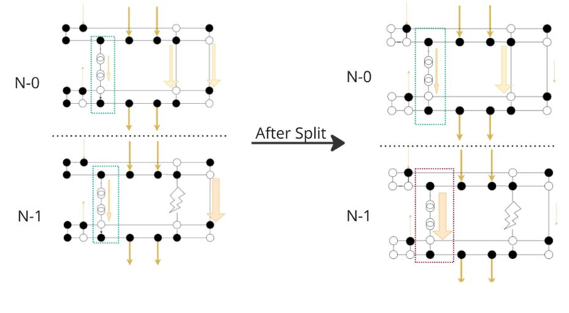

Quickstart#
Preprocessing#
To get the solver running, we first need to preprocess a grid file. In practice this means working from a processed grid folder that contains a backend grid snapshot (grid.xiidm or grid.json), masks, and loadflow parameters. For Powsybl grids, preprocessing also derives parallel PST group metadata so grouped PSTs can stay synchronized during solver execution and optimization. Parallel PST group optimization is not supported for the PandaPower backend. There are three noteworthy steps in the preprocessing:
- BackendInterface: A backend offers a read-only interface to a power systems modeling software and translates the information from the modeling software into a software-agnostic node-branch representation. Currently, there is a PandaPowerBackend and a PowsyblBackend available.
- NetworkData: This is a backend-agnostic representation of the grid with all the information needed for post-processing and execution of the loadflow solver. You can obtain a filled instance of this through preprocess and generate a StaticInformation dataclass from it.
- StaticInformation: Stores only the relevant data for the loadflow computation directly on GPU VRAM, fully in jax format. You can obtain this from a filled network data instance through convert_to_jax.
A potential preprocessing invocation could look like this:
from toop_engine_dc_solver.preprocess import (PandaPowerBackend, preprocess, convert_to_jax)
import jax
jax.config.update("jax_enable_x64", True)
backend = PandaPowerBackend("path_to_grid_files")
network_data = preprocess(backend)
static_information = convert_to_jax(network_data)
If you want the repository-standard artifact flow on disk, prefer load_grid:
from fsspec.implementations.dirfs import DirFileSystem
from toop_engine_dc_solver.preprocess import load_grid
stats, static_information, network_data = load_grid(DirFileSystem("path_to_processed_grid"))
This reads the processed grid folder and writes static_information.hdf5, action_set.json, action_set_diffs.hdf5, static_information_stats.json, and dc_nminus1_definition.json, the DC projection of the importer's contingency definition. The importer's nminus1_definition.json is left unchanged. For Powsybl grids with supported parallel PST groups, the saved action set contains explicit pst_group values for controllable PSTs.
The jax.config.update statement is recommended because otherwise the static information will be in 32 bit, as jax is automatically converting everything to 32 bit by default and setting this config flag will stop it from doing so. You can still switch to 32 bit during the execution, but by running the preprocessing in 64 bit, you will retain the option to choose at the expense of a bit of disk space.
After preprocessing, you can then save the data to load it later on the machine where you want to compute the loadflows:
from toop_engine_dc_solver.preprocess import save_network_data
from toop_engine_dc_solver.jax import save_static_information
save_network_data("network_data.pkl", network_data)
save_static_information("static_information.hdf5", static_information)
And then later on the machine:
from toop_engine_dc_solver.jax import load_static_information
static_information = load_static_information("static_information.hdf5")
Running the solver#
Getting started#
To get a simple N-0/N-1 computation, we can use run_solver:
from toop_engine_dc_solver.jax import (run_solver, default_topology, default_injection)
topology = default_topology(static_information)
injection = default_injection(static_information)
res = run_solver(topology, None, injection, static_information)
This will give us the SparseSolverOutput for all topologies, containing SparseNMinus0 and SparseNMinus1 results in sparse representation, only giving back the worst elements.
For controlling the amount of results returned, you can adjust
number_most_affected, number_most_affected_n_0 and number_max_out_in_most_affected:
from jax_dataclasses import replace
static_information = replace(
static_information,
solver_config=replace(
static_information.solver_config,
number_most_affected=20,
number_max_out_in_most_affected=5,
number_most_affected_n_0=20,
)
)
If you instead require the full N-1 matrix, you can pass a custom aggregate_output_fn to the solver. Note that for this, you will have to know whether you have a run_solver_symmetric batch. This method accept an aggregate_output_fn which follows the signature of AggregateOutputProtocol. Let's pass a simple aggregate output function that performs no aggregation at all and just passes through the N-0 and N-1 results:
custom_aggregate_fn = lambda lf_res: (lf_res.n_0_matrix, lf_res.n_1_matrix)
(n_0_res, n_1_res), success = run_solver_symmetric(topology, None, injection, static_information, custom_aggregate_fn)
Note that if you want to call run_solver_symmetric in a loop, you should define the aggregate function outside of the loop as otherwise jax will recompile on every iteration.
Adjusting topologies#
Eventually, you will want to compute some changes on the grid.
For this, you need to familiarize yourself with the topo-vect format as introduced by grid2ops. The basic idea behind this is to set the assumption that an individual voltage-level/substation will only operate in 1-node-configuration or 2-node-configuration. I.e. even if there are more than 2 busbars in the substation, they will only form at most two separate connected components. Hence, we can represent the assignments of elements to the busbars as boolean vectors. Let's say we have a grid with 2 substations:
- SubA with 4 branches and 2 injections
- SubB with 5 branches and 1 injection.
The topo-vects for this grid would look like this:
branch_topo_vect = [
True, False, True, False, # SubA
True, False, True, False, True # SubB
]
inj_topo_vect = [
True, False, # SubA
True # SubB
]
branch_topo_vect = [
[True, False, True, False, False], # SubA, last element is ignored
[True, False, True, False, True] # SubB
]
You can use convert_topo_sel_sorted and convert_branch_topo_vect to convert between the two formats of storing a branch topology.
Injection topologies are represented via the action set in JAX. For custom injection combinations you can use convert_inj_topo_vect together with convert_inj_candidates to build inputs for the solver.
Influencing the Topology Evaluation#
The optimizer requires at least one metric to steer improvement. By default this is the overload energy of all optimized branches, but other metrics can be used or added. To calculate these metrics, certain parameters must be defined or calculated during preprocessing.
Adjusting the physical branch limits#
Real life operations may require an adjustment of the physical branch limits e.g. to reduce a line further due to uncertainties in the forecasts or to reduce a line less preventatively due to easy curative actions. In the German PRDx process, black and white lists are used for this purpose. The whitelist can be used to define different maximum load-values. The blacklist can be used to exclude branches from the n-1-calculation. This is currently happening in the importing step.
Metrics Overview#
The possible aggregation metrics can be found here. Here is a brief summary:
| Metric | Description |
|---|---|
| "max_flow_artificial_limit_n_0" | The maximum flow on all monitored branches in N0 |
| "median_flow_artificial_limit_n_0" | The median flow on all monitored branches in N0 |
| "overload_energy_artificial_limit_n_0" | The sum of the load above the optimization target on all monitored branches in N0 |
| "underload_energy_artificial_limit_n_0" | The sum of the load between the current load and the optimization target on all monitored branches in N0 |
| "exponential_overload_energy_artificial_limit_n_0" | The sum of the load above the optimization target on all monitored branches in N0 multiplied with an exponentially increasing factor |
| "critical_branch_count_artificial_limit_n_0" | The amount of monitored branches above their optimization target in N0 |
| "max_flow_artificial_limit_n_1" | The maximum flow on all monitored branches in N-1 |
| "median_flow_artificial_limit_n_1" | The median flow on all monitored branches in N-1 |
| "overload_energy_artificial_limit_n_1" | The sum of the load above the optimization target on all monitored branches in their worst N-1 case |
| "underload_energy_artificial_limit_n_1" | The sum of the load between the worst N-1-load and the optimization target on all monitored branches |
| "exponential_overload_energy_artificial_limit_n_1" | The sum of the load above the optimization target on all monitored branches in their worst N-1 case multiplied with an exponentially increasing factor |
| "critical_branch_count_artificial_limit_n_1" | The amount of monitored branches above their optimization target in their worst N-1 case |
| "n0_n1_delta" | See N0/N1 Delta |
| "cross_coupler_flow" | The sum of the power flowing across the switched busbarcouplers before opening them |
| "switching_distance" | The amount of switching actions have to take place from the original to the proposed topology |
| "split_subs" | The amount of busbar couplers were opened |
| "pst_switching_distance_squared" | Squared sum of absolute distances from initial PST tap indices to optimized PST tap indices (summed over PSTs and timesteps) |
| "pst_switching_distance" | Linear distance from initial PST tap indices to optimized PST tap indices, computed as the sum of absolute tap changes across PSTs and timesteps |
| "pst_activated" | Number of PST tap indices that changed compared to the initial taps (implicit unit cost, weighted through target_metrics) |
Branch Weights#
Branch weights change each branch's contribution to the calculation of the chosen overload metric.
$$ \text{overload}\text{grid} = \sum}^n \text{weight\text{branch} * \text{overload} $$
Per default the weight of each branch is 1.0. The weight can be increased or decreased, which can be useful if
- some branches require a higher redispatch volume and/or more expensive plants per Watt of overload energy than others
- certain branches are more (or less) critical than others (e.g. cross border lines)
Artificial limits#
The importer sets artificial_limit_n_0 and artificial_limit_n_1 operational limits for monitored branches from its double_limits parameter. The DC solver stores these as max_mw_flow and max_mw_flow_n_1; all DC overload metrics use them directly. How the limits are derived for optimized and non-worsening branches is described in Artificial limits. Results generated under the former physical-limit semantics are not directly comparable.
N0-N1 Maximum Difference Factors#
The N0 - N1 Max Diff Factors limit the increase of load on certain branches in the N-1 case. By applying this limit to transformers, the optimizer is penalized for creating scenarios that pump a lot of energy into the distribution grid upon simple failures.

The limits can be set by providing .npy masks for each branch-type that shall be penalized: {branch_type}_n0_n1_max_diff_factor.npy
The array should include factors that are multiplied with the current N0 - N1 Difference to calculate the maximum non-penalized difference in MW after the optimization.
For example if a branch has a 20 MW diff between N-0 and N-1 in the base case (in the unsplit configuration) and the factor is 2, then the maximum allowed difference for the n0_n1_delta penalty would be 40 MW. If a negative factor is used, this branch has no N-0 to N-1 maximum delta and will always incur a penalty of 0.
The absolute values of the N0-N1 Difference are calculated as part of the initial load flow calculation (run_initial_loadflow) during the preprocess function load_grid and stored inside the static information as part of the branch_limits with the key 'n0_n1_max_diff'.
To use the N0-N1 Difference in the optimizer, the metric "n0_n1_delta" has to be included in the target_metrics.
Postprocessing#
The repository offers some postprocessing routines as well, they are bundled in the postprocess module. Depending on the backend you use, you will either need a PandapowerRunner or a PowsyblRunner. These classes abstract away the loadflow computation feature of the grid modeling packages.
Furthermore, methods from the postprocess module can be used to extract the relevant information from the network data and apply the topologies to the grid. The following code snippet shows how to use the postprocessing module:
from toop_engine_dc_solver.postprocess import PowsyblRunner, translate_branch_topology, translate_injection_topology, translate_relevant_substations
parsed_topology = translate_relevant_substations(network_data)
parsed_topology = translate_branch_topology(parsed_topology, branch_topo_vect)
parsed_topology = translate_injection_topology(parsed_topology, inj_topo_vect)
runner = PowsyblRunner()
runner.load_base_grid("path_to_base_grid")
runner.extract_network_data_info(network_data)
runner.apply_topology(parsed_topology)
runner.run_dc_loadflow()
For the PowsyblRunner, the expensive part of N-1 preparation is translating the monitored branch limits into the powsybl contingency-analysis input format. The runner therefore keeps a branch-limit cache and refreshes it only when the underlying inputs change.
- The cache is built once both the base grid and the N-1 definition are loaded into the runner.
- The cache is reused across repeated N-1 runs, including the worst-k early-stopping stage followed by the full N-1 stage, as long as the monitored branch set stays the same.
- The contingency list itself is not part of the cache key, so swapping between a reduced worst-k subset and the full contingency list does not force a rebuild on its own.
- The cache is invalidated when the base grid is replaced, when the monitored branches change, or when the current branch limits in the base grid no longer match the cached fingerprint.